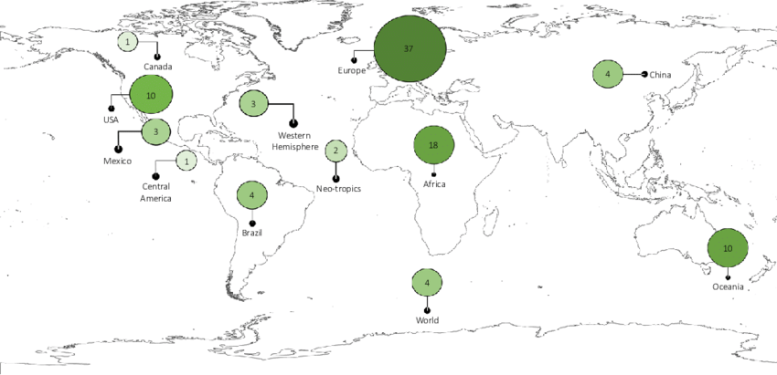
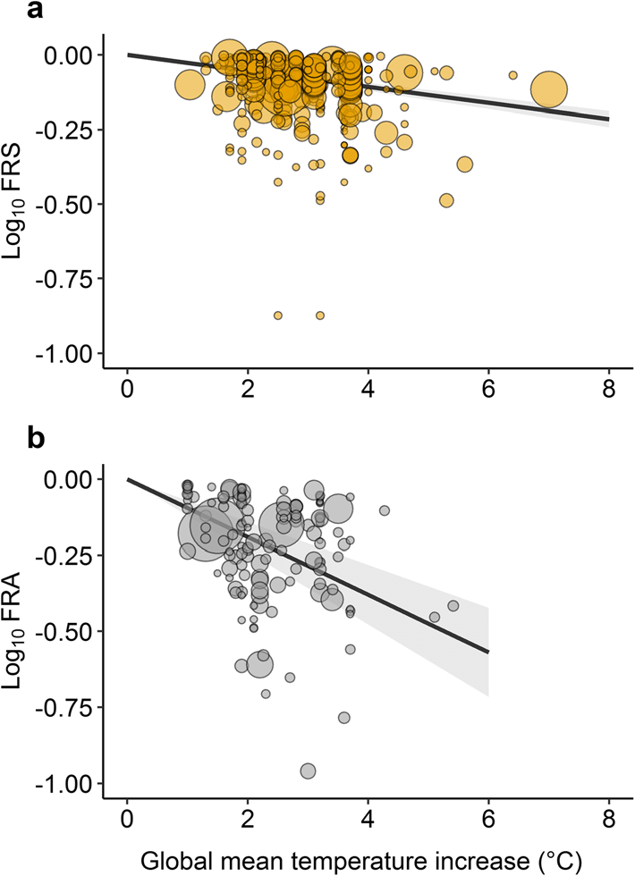
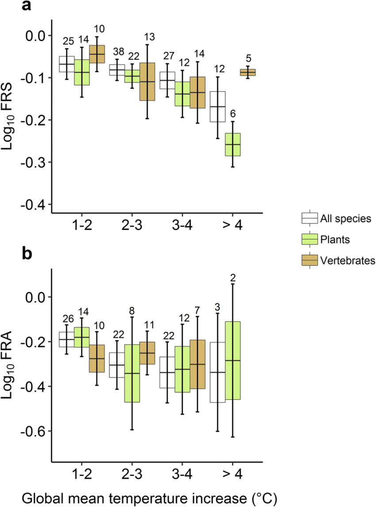
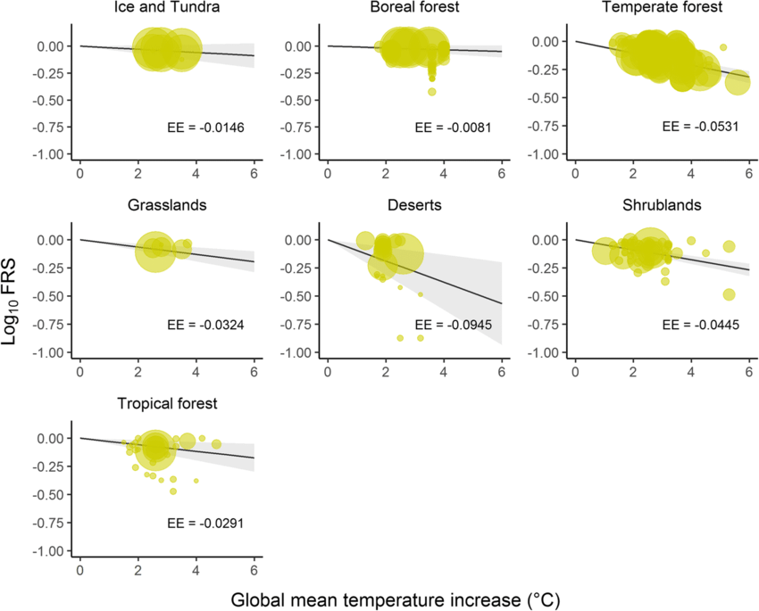

research paper
Assessing the impacts of climate change on biodiversity: is below 2 °C enough?
Abstract
Large changes in biodiversity are expected to occur if climate change continues at its current pace. Adverse effects include changes in species habitats and compositions, and consequently changes in ecosystem functioning. We assessed the magnitude of expected changes of biodiversity by performing a meta analysis of the responses of species distributions to climate change. We focused on the proportion of local remaining species and their habitats. We summarized 97 studies and calculated two effect-size metrics from their results to quantify changes in biodiversity. These metrics are the fraction of remaining species (FRS) and the fraction of remaining area (FRA) with suitable climate for each species. Both metrics calculate deviations from the original biodiversity state and together they indicate biodiversity intactness. We found an expected gradual decrease in both FRS and FRA with significant reductions of 14% and 35% between 1 and 2 °C increase in global mean temperatures. Strong impacts are projected for both mammals and plants with FRS reductions of 19%. The climate-change response of biodiversity varies strongly among taxonomic groups and biomes. For some taxonomic groups the FRA declines strongly beyond 3 °C of temperature increase. Although these estimates are conservative, as we assume that species are unable to disperse or adapt, we conclude that already at moderate levels (i.e., 1–2 °C) of temperature increase a significant decrease of original biodiversity is projected. Our research supports the pledge to limit climate change to 1.5 °C and preferably lower to protect biodiversity.
Introduction
Biodiversity is under increasing threats by many anthropogenic pressures (Alkemade et al. 2009; Leadley et al. 2014; Tittensor et al. 2014; Visconti et al. 2015; Johnson et al. 2017; Ripple et al. 2017). A major pressure of biodiversity decline in this century is climate change (Parmesan and Yohe 2003; Thomas et al. 2004; Warren et al. 2011; Bellard et al. 2012; Pacifici et al. 2015; Urban 2015). Climate change affects biodiversity as climate variables largely determine the geographical distribution ranges of species (i.e., species’ climate envelopes; Box 1981; Guisan and Zimmermann 2000; Pearson and Dawson 2003). Hence, in areas where climate is no longer suitable, species shift their geographical ranges and go extinct locally, depending on their dispersal capacities (Guisan and Zimmermann 2000; Bellard et al. 2012). Species’ phenology and physiology and community structures and ecosystem functions are also affected (Bellard et al. 2012). All these negative impacts exacerbate the challenge to manage and conserve biodiversity (CBD 2019). The average
global temperature has increased by almost 1 °C since 1880, and the adverse effects of such increase on biodiversity are already witnessed and documented by many studies (Thomas et al. 2004; Parmesan 2006; Butchart et al. 2010; Cardinale et al. 2012; Cook et al. 2012; IPCC 2013; Peñuelas et al. 2013; sCBD 2014; Pacifici et al. 2017; Pecl et al. 2017). They all show that the decline of biodiversity continues worldwide as many ecosystems lose suitable conditions for the survival of a proportion of their species. Some studies project the already observed negative impacts on species (e.g., Parmesan et al. 2013; Warren et al. 2013), and their results feed into the ongoing debate of constraining the increase of global temperatures (e.g., by the climate-change target to keep global temperature increase well below 2 °C above pre-industrial levels in the Paris Agreement (UNFCCC 2015; Rogelj et al. 2018)). Yet,
how biodiversity will respond to a global mean temperature increase of 2 °C, or any increase close to this target, is not yet clear and represents a fundamental research challenge. The primary objective of this study is to quantify the response of terrestrial biodiversity to climate change covering global mean temperature increase up to 6 °C in 2100 (and implicitly considering associated climate variables, such as precipitation change) above the pre industrial level. For this purpose, we performed a meta-analysis of studies that used bioclimatic models and climate-change scenarios. These studies reported climate-change effects on contemporary ecosystems and different taxonomic groups around the world. The climate-change level in these studies was indicated by their scenario’s global mean temperature increase. Most climatechange scenarios project that global mean temperature continues to increase to between 2 and over 5 °C in 2100 (Kintisch 2009; Moss et al. 2010; IPCC 2013; Rogelj et al. 2018). Similar to previous modeling studies that assessed the overall decline of biodiversity (e.g., Alkemade et al. 2009), we focused on the proportion of remaining biodiversity. We calculated two effect metrics: the fraction of remaining (i.e., persisting) species (FRS) at a location and the fraction of remaining area (FRA) with suitable climate for species. These metrics assess the changes of species richness over a region compared to the original situation in the selected study. Both metrics indicate a deviation from the original biodiversity state and indicate biodiversity intactness (Scholes and Biggs 2005; Alkemade et al. 2009). FRS indicates a decrease of species within the study region. FRA indicates a suitable climate-area (e.g., habitat) contraction within the study region. A potential increase of species or extending its geographical range is excluded from these metrics. As a result, FRS and FRA generally indicate a decline regardless of the global temperature interval. The changes in species composition can also indicate consequences for ecosystem’s functioning, but we do not address this. The results of our meta-analysis allow 352 Climatic Change (2019) 154:351–365 to generalize projected trends and to assess effects across a broad range of climate change projections. The established meta-regression models can be used in models, such as the GLOBIO model (Alkemade et al. 2009; Alkemade et al. 2011), to assess biodiversity change in scenario studies in combination with other pressures of global biodiversity loss.
2 Methods and materials
2.1 Systematic literature review
In June 2016, we queried the ISI Web-of-Science database to identify bioclimatic modeling studies that assess the effects of global mean temperature increase on terrestrial biodiversity. We reviewed all studies following the guidelines provided by the Collaboration for Environmental Evidence (CEE) (CEE
2013) (see Online Resource 1 for a detailed description of the process). The guidelines indicate the stages for conducting a systematic research in environmental science, and these stages were combined into three main steps. Firstly, we defined several search terms and classified them into four main search strings to conduct the review: (i) Climate change elements: (climat* SAME change*) OR (temperature SAME change*) OR (temperature SAME increase) O (global SAME warming) OR (climat* SAME warming); (ii) biodiversity elements: (biodiversity) OR (diversity SAME species) OR (species SAME richness*) OR (species SAME distribution*) OR (species SAME abundance*) OR (species SAME occurrence*) OR (species SAME turnover) OR (species SAME loss*) OR (species SAME gain*) OR (species SAME composition) OR (species SAME assemblage*); (iii) bioclimatic modeling elements: (bioclimat* model*) OR (niche* model*) OR (climat* model*) OR (distribution model*) OR (habitat model*) OR (ecologic* model*) OR (occurrence model*) OR (species distribution model*) OR (model* distribution*) OR (model* range*) OR (climat* envelope*) OR (envelope* model*); and (iv) modeling projection elements: (future SAME distribution*) OR (climat* SAME scenario*) OR (climat* SAME projection) OR (climat* SAME prediction) OR (climat* SAME pathway*). Additionally, we defined seven inclusion criteria to determine the pertinence of the studies (see criteria in Online Resource 1). These criteria allowed to further restrict the selection by rejecting those studies that did not support our objective. All studies were screened by title for their relevance to the purpose of our study. Those studies selected were then screened by abstract and, when providing limited information in their abstracts, were fully screened, both in content and supporting material. Secondly, the potentially relevant studies were critically revised to select those fulfilling the inclusion criteria. Finally, the relevant data were extracted from all selected studies and synthesized in a biodiversity-impact database. These data included number of species and their area with suitable climate in the original and the projected climate situations, taxonomic group, study location, spatial resolution, and the used global mean temperature increase. Many studies that reported climate effects on single species or exotic species (particularly weeds and insect pests, and aquatic species) were excluded from the database. These studies do not provide data on the original species composition or do not consider terrestrial species.
2.2 Calculation of effect sizes
We calculated the effect sizes, which are measures commonly used in meta-analyses, for each selected study. For studies that assessed the number of species affected by increasing Climatic Change (2019) 154:351–365 353 temperatures, we used the fraction of species remaining at a location (fraction remaining species (FRS) as the effect size; for studies assessing the loss of area with suitable climate for a species, we used the fraction of remaining area with suitable climate (fraction remaining area (FRA)) under a projected increase of global mean temperature (Fig. 1). Both FRS and FRA are effect sizes compared to the original situation in the selected study. The original situation refers
to the ecosystem’s condition before its climate changed (i.e., original area with suitable climate). Results from multiple climate-change scenarios and time periods, or different bioclimatic modeling algorithms (e.g., generalized linear model, generalized additive model, maximum entropy modeling) that are reported in a study, were all included as separate effect sizes in our database. We specifically estimated the proportion of remaining biodiversity (i.e., a conservative option assuming that species are unable to disperse or adapt) for three main reasons: (i) on average, the projected climate distributions of species are closer to projections without dispersal than projections with full dispersal (Midgley et al. 2006; Hellmann et al. 2016); (ii) uncertainty associated to the capacity of species to disperse (Pearson and Dawson 2003; Pearson et al. 2006) or adapt (Berry et al. 2013) under climate change is reduced; and (iii) FRS and FRA fit into the domain of the GLOBIO model, more specifically, they relate to the relative Mean Species Abundance (MSA) indicator from GLOBIO (Alkemade et al. 2009) and the Biodiversity Intactness Index(BII) (Scholes and Biggs 2005; Newbold et al. 2016) of the local remaining biodiversity.
2.3 Harmonization of climate-change effects
All studies reported their baseline and projected climate conditions. Following Warren et al. (2011), we converted projected temperatures from the climate-change scenarios for each study to a common pre-industrial reference (approximately 1880) (Eq. 3). To this end, the assumed temperature increase between pre-industrial and the 1961–1990 climatic normal was 0.3 °C, between pre-industrial and 1981–1990 was 0.5 °C, and between pre-industrial and 1990 was 0.6 °C. These are the baseline conditions often reported by the selected studies (see Online Resource 2).
where GMTIn is global mean temperature increase converted to a common pre-industrial reference point for study n, Tscen is the projected temperature, and ΔTpre-ref is the assumed temperature increase between the pre-industrial and the baseline conditions, which are both driven by (or based on) climate-change scenarios. We defined four intervals of temperature increase for the meta-analysis: 1–2 °C, 2–3 °C, 3–4 °C, and ≥ 4 °C. Temperature increases between 0 and 1 °C usually correspond to short-term climate-change scenarios depicting low carbon emissions and/or stringent mitigation policies.
2.4 Meta-analysis
We conducted a meta-analysis to derive the pooled effect for all effect sizes as a response to global mean temperature increase. We used the package “Metafor” in the R-3.2.2 software (Viechtbauer 2010) and the rma.mv() function assuming independence between the effect size and sampling variance. The included studies are a selection from a larger population of bioclimatic modeling studies (see Online Resource 2).
We ran mixed-effect models with random-effect structures (see Online Resource 1). We compared them using the Bayesian information criterion (BIC). We then fitted random effect meta-models with restricted maximum likelihood (REML) to different taxa subsets. These are “all species,” “plants,” “vertebrates,” “birds,” “mammals,” “herptiles,” and “insects,” for the effect sizes FRS and FRA, and for all four intervals of global mean temperature increase. We introduced the variable “biomes” as a moderator to determine sources of heterogeneity (see Moderator Variable and Table OR1.1 in Online Resource 1).
For the meta-analyses and the meta-regression analyses ratios are often transformed using logit or log transformations to reach normality assumption for the effect sizes (Urban 2015; Benítez-López et al. 2017). We ran the mixed-effect models separately for the untransformed effect sizes FRS and FRA, the logit-transformed and the log10
transformed FRS and FRA, and checked the results for robustness (see Mixed-effect models in Online Resource 1). In addition, meta-regression analyses were used to relate pooled effect sizes FRS and FRA to global mean temperature increase.
3 Results
The systematic literature search yielded 302 relevant studies after the title screening. These studies were screened by abstract, out of which 138 fulfilled the criteria for full text screening. We finally selected 97 studies that assessed species composition of the originally occurring species at a location spanning publication dates between 1992 and 2015. Figure 2 shows the results from the systematic literature review. The selected studies allowed the calculation of 370 effect sizes for FRS (data from 60 studies) and 146 for FRA (data from 50 studies). The studies and the relevant information extracted are provided in the Online Resource 2. The types of bioclimatic models in the selected studies cover, in some cases, the entire distribution of each species studied. For instance, these models were derived for a continental species distribution or for endemic species. In other studies the models do not cover the entire range of all species and this likely slightly overestimates the effects of climate change.

The meta-analyses show similar results for untransformed, logit-transformed, and logtransformed effect sizes, suggesting robustness of these results. Here we present the results of log10-tranformed FRS and FRA, which is the most commonly used transformation. Results for untransformed effect sizes and logit-transformed FRS and FRA are provided in Tables OR3.5–OR3.8 in the Online Resource 3. We retained the random-effect structures (1 | Study ID + 1 | Extent) for the meta-analysis of FRS (BIC = − 502.4888) and (1 | Extent) for the meta-analysis of FRA (BIC = 14.8613) (see Table OR3.1 in Online Resource 3 for results of all random-effect structures). Results from the
meta-regressions to estimate the response changes of FRS and FRA to global mean temperature increase are shown in Fig. 3. The effect sizes decrease with increasing climate change—the rate of decrease is generally larger for FRA than for FRS. Table 1 provides the results of the random-effect meta-models for FRS and FRA for all species. FRS and FRA were significantly lower under each global mean temperature increase interval. Overall, the FRS and FRA were reduced by 19% (95% confidence interval: 14–23%) and 47% (95% confidence interval: 37–55%), respectively (see Fig. OR3.1 Forest plots in Online Resource 3). The first interval 1–2 °C for the all species group results in a FRS of 86% (95% confidence interval: 79–93%) and a FRA of 65% (95% confidence interval: 56–75%).

| GMTI interval (°C) |
n |
Effect size (log10) |
Effect size Back-trasformed |
SE |
P value |
Z value |
CI (lb) |
CI (ub) |
Q |
P(Q) |
k |
| FRS |
|
|
|
|
|
|
|
|
|
|
|
| Pooled effecta |
370 |
− 0.0898 |
0.8132 |
0.0121 |
<0.0001 |
− 7.4036 |
− 0.1136 |
− 0.066 |
1506.2561 |
< 0.0001 |
60 |
| 1–2 |
57 |
-0.0677 |
0.8556 |
0.0184 |
0.0002 |
− 3.673 |
− 0.1039 |
− 0.0316 |
117.4953 |
< 0.0001 |
25 |
| 2–3 |
156 |
− 0.0815 |
0.8288 |
0.0127 |
< 0.0001 |
− 6.3965 |
− 0.1065 |
− 0.0566 |
506.0702 |
< 0.0001 |
38 |
| 3–4 |
140 |
− 0.1062 |
0.7831 |
0.0201 |
< 0.0001 |
− 5.2845 |
− 0.1456 |
− 0.0668 |
565.2286 |
< 0.0001 |
27 |
| FRA |
|
|
|
|
|
|
|
|
|
|
|
| Pooled effect |
146 |
− 0.2729 |
0.5335 |
0.0355 |
< 0.0001 |
− 7.6889 |
− 0.3424 |
− 0.2033 |
208.6342 |
0.0004 |
50 |
| 1–2 |
69 |
− 0.1902 |
0.6454 |
0.0333 |
< 0.0001 |
− 5.7101 |
− 0.2555 |
− 0.1249 |
31.1578 |
1 |
26 |
| 2–3 |
38 |
− 0.3045 |
0.4960 |
0.0554 |
< 0.0001 |
− 5.4929 |
− 0.4132 |
− 0.1959 |
83.1113 |
<0.0001 |
22 |
| 3–4 |
36 |
− 0.3376 |
0.4596 |
0.0695 |
< 0.0001 |
− 4.8603 |
− 0.4737 |
− 0.2015 |
72.6694 |
0.0002 |
22 |
These estimates imply that under a global mean temperature increase of up to 2 °C, terrestrial ecosystems could lose on average 14% of their current local species and that species could lose on average 35% of their suitable climate area. The intervals 2–3 °C and 3–4 °C result in larger reductions of FRS and FRA compared to the first interval: FRS is projected to reduce to 83% (95% confidence interval: 78–88%) and 78% (95% confidence interval: 72–86%), and FRA to 50% (95% confidence interval: 39–64%) and 46% (95% confidence interval: 34–63%), respectively. However, the largest reductions occur under a global mean temperature increase beyond 4 °C: only 68% of the local current species are projected to remain on average across the Earth’s terrestrial ecosystems (95% confidence interval: 57–80%) and their suitable climate area will likely be reduced to less than 46% (95% confidence interval: 25–85%). These responses are based on a wide range of climate projections with up to 6 °C increase in bioclimatic studies assessing distributions for birds and plants species (e.g., Shoo et al. 2005; Sekercioglu et al. 2008; Meyer et al. 2016).
FRS and FRA responses differ among taxonomic groups. The responses of the taxonomic group plants are lower than for vertebrates in all temperature increase intervals. In the interval of 1–2 °C, the fraction of local originally occurring plant species is reduced by 18%, whereas the vertebrate species fraction is reduced by 10%. Under a more extreme temperature-increase interval (e.g., 3–4 °C), the suitable climate area for plant species is reduced by 53% and for vertebrate species by 50%. These results differ significantly from the original situation . The visual inspection of the funnel plots of asymmetry for FRS and FRA indicates that a bias is absent. We found that mammals show the largest reduction in FRS, which quickly declines beyond 2 °C. Contrary to this FRS case, FRA for birds reduces to a larger extent under all intervals.

Estimates of FRS and FRA can also be used to rank biomes to indicate sensitivities to climate change. The resulting effect-size estimates from our mixed-effect models were used to run meta-regressions to assess the response of biomes to global mean temperature increase. We found that deserts, temperate forests, and shrublands experience the largest reductions in FRS and tropical and boreal forests in FRA. These are thus likely the most sensitive biomes to increasing global temperatures.

4 Discussion and conclusions
The projections of both the FRS and the FRA overall show continuous decreases. This indicates losses of local species richness (on average by 14% at 2 °C of global mean temperature increase) and losses of suitable climate area of many species (on average by 35% at 2 °C of global mean temperature increase). These results indicate that many species will be extirpated locally and disappear from areas where they now occur. This finding is supported by other studies (e.g., Wiens 2016) and will certainly challenge species conservation in many places (Johnson et al. 2017; Warren et al. 2018). However, this does not mean that total species richness will necessary decrease as new species can potentially expand their ranges and establish, depending on their ability to disperse (Hellmann et al. 2016), but such emerging species are logically ignored in our effect sizes.
We estimated that reductions exacerbate as global mean temperature goes beyond 2 °C. For example, at 3 °C of global mean temperature increase the local species richness decreased on average by 17% and the suitable climate area of species by 50%. In addition, these effects are expected not only to increase biodiversity losses but also to accelerate for every degree rise in global mean temperature. As a result, all the local decreases will likely lead to global extinctions.
The results of FRS and FRA vary among taxonomic groups and biomes. This means that the species responses are closely related to their individual sensitivities and exposures to changes in temperature (Urban et al. 2016). For example, the response of vertebrate species to increases in global mean temperature was a decrease in both FRS (on average 10% at 2 °C of global mean temperature increase) and FRA (on average 47% at 2 °C of global mean temperature increase). We found that within the vertebrate group, mammals are projected to undergo the largest local species reduction (i.e., overall FRS reduced by 22%). Our finding is consistent with previous studies (Pacifici et al. 2017), which conclude that many threatened mammals are also negatively affected by climate change. For plant species, the projected FRS and FRA decreased by 18% and 34%, respectively, at 2 °C of global mean temperature increase. The lower plant species’ FRS response probably resulted from a higher variability among effect sizes than the variability for vertebrate species’ FRS. This high variability likely relates to methodological issues (e.g., different modeling algorithms) that are inherent to bioclimatic modeling and that affect species-range shifts and abundances. Although exotic and aquatic species were excluded from our study, the different climate-change responses of these groups (e.g., Schnitzler et al. 2007; Kalwij et al. 2015) contribute to the challenge of setting a climate-protection target. Our analysis with the mixed-effect model with biomes as a moderator resulted in a lower heterogeneity in effect sizes compared to plants and vertebrate species. This indicates that biomes is an important explanatory variable when assessing the projected effect of global mean temperature increase on biodiversity.
FRS and FRA focus on assessing the remaining proportion of biodiversity under the conservative assumption of no dispersal. On average, no dispersal is close to reality for most species (Midgley et al. 2006; Hellmann et al. 2016). This implies that FRS and FRA generally indicate decreases. FRS is consistent with indices that estimate the naturalness or intactness, such as the BII (Scholes and Biggs 2005) or the MSA (Alkemade et al. 2009; Alkemade et al.
2011). As these indices are officially accepted by the Convention on Biologically Diversity to indicate the expected responses of original occurring species, our outcomes can also be used in Climatic Change (2019) 154:351–365 361 international assessments of biodiversity change, such as the Global Biodiversity Outlook (sCBD 2014) and other global studies (e.g., PBL 2012; Kok et al. 2018). FRS, however, differs from other biodiversity indices, such as the Species Richness Index (Newbold et al. 2014), because FRS ignores new species for which the future climate becomes suitable. FRA
accounts for suitable climate-area reduction of local species. Previous studies that analyzed suitable habitat of species to estimate global species richness patterns (e.g., Visconti et al. 2015) and/or the average proportional change in species distributions to estimate species extinction risks (e.g., Thomas et al. 2004) used similar approaches as our FRA. These studies inform developing goals for local biodiversity conservation and designing protected areas (Newbold et al. 2014; Virkkala et al. 2014). However, such studies also ignore reductions in areas with suitable climate of the originally occurring local species and the local community compositions.
Addendum
I have used "h" to write headings
I have used "b" to write bold letters
I have used "center" to present the images and headings in the middle of the page
I have used "img src" to keep the picture in the web page
I have used "table" to create the table
I have used "table bgcolor" to change the background color
I have used "tr" to create the table row
I have used "tr bgcolor" to change the background color of row
I have used "th" for headings in the first row
I have used "td" to define the data cells in the rows